Historia
Humanismo y Renacimiento
Índice
- Renacimiento
- Humanismo
- Las principales características del Renacimiento
- Las principales características del Humanismo
- Influencia de humanismo en el pensamiento y la cultura de la época renacentista
- Los principales pensadores humanistas y sus contribuciones
- El papel que tuvo la literatura y las artes en la difusión de las ideas renacentistas
- ¿Cómo se refleja el redescubrimiento de la antigüedad clásica en las obras de arte del Renacimiento?
- La relación entre el Renacimiento y el desarrollo de la ciencia
- ¿De qué manera la invención de la imprenta impactó el Renacimiento y el humanismo?
- ¿Cómo se manifestaron las ideas humanistas en la educación durante el Renacimiento?
- ¿Cómo desafió el Renacimiento las ideas y la autoridad de la Iglesia católica?
1- ¿Qué es el Renacimiento?
El Renacimiento fue un amplio e importante movimiento cultural producido en Europa entre los siglos XV y XVII, que implicó una transformación profunda del pensamiento, las artes y las ciencias, y representó la transición entre la Edad Media y la Edad Moderna. Se caracterizó por el retorno a las formas culturales de la Antigüedad clásica (siglos VIII a. C. a V d. C.), lo que significó una revalorización de los mitos, los discursos y la filosofía de la Antigua Grecia y del Imperio romano, luego de siglos de dominio cristiano. Este movimiento fue muy heterogéneo y dispar, tanto desde el punto de vista cronológico como geográfico. Surgió en Italia en el siglo XV, de allí se expandió de forma diversa y compleja al resto de Europa, y luego a las recién colonizadas regiones de América. Los cambios políticos y sociales que ocurrieron durante este período generaron transformaciones drásticas en la cultura y las formas de vida de Occidente. Con el Renacimiento, se puso fin al modo de vida religioso medieval y al sistema feudal, emergió una nueva clase social, la burguesía, y se dieron las condiciones para el surgimiento del capitalismo. Grandes artistas y pensadores, como Leonardo da Vinci (1452-1519), El Greco (1541-1614), Miguel Angel Buonarroti (1475-1564), Sandro Botticelli (1445-1510), Rafael Sanzio (1483-1520) y Filippo Brunelleschi (1377-1446), formaron parte del Renacimiento, y algunas de sus obras se erigieron como íconos de la cultura occidental moderna. De alguna forma, el mundo que conocemos hoy comenzó a construirse con el Renacimiento.
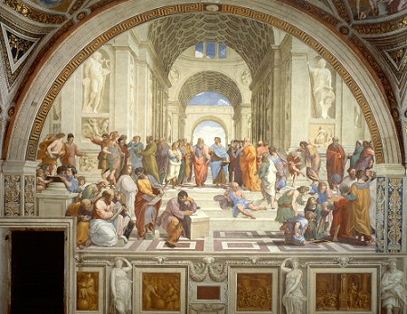
2-¿Qué es el Humanismo Renacentista?
El espíritu del Renacimiento fue configurado por el humanismo, un movimiento filosófico y cultural que retomó los valores clásicos grecolatinos para reinventarla cultura europea, tras el quiebre del pensamiento medieval. El humanismo cuestionó el lugar central de la fe y puso énfasis en la razón humana como fuente de conocimiento y verdad. A través de las ciencias nacientes, propuso una concepción diferente del mundo y del lugar del ser humano, y abrió el camino hacia la Ilustración y la Revolución francesa de 1789. El espíritu humanista se opuso a las desigualdades de la sociedad medieval, que otorgaba privilegios económicos y educativos a las clases nobles y al clero, mientras que el resto de la población era mayormente analfabeta y vivía encondiciones de pobreza. Los humanistas reinterpretaron algunos valores clásicos como la razón, la igualdad, la libertad y la justicia para avanzar hacia un mundo en el que los seres humanos fueran los creadores de su propio destino, en lugar de la autoridad divina. El proyecto humanista se propuso limitar el poder de la Iglesia y construir, a partir de nuevos discursos y valores, una moral y una ética propias, lo cual dio forma a lo que se conoce como filosofía moderna. Con la aparición del humanismo, el mundo medieval llegó a su fin y comenzó la Edad Moderna en Occidente.
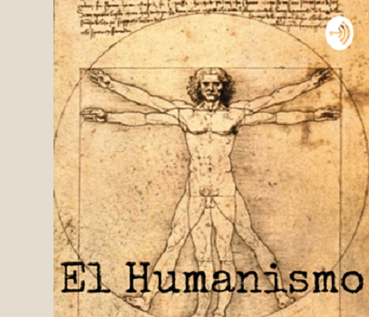
3-Las Principales Características del Renacimiento
Las principales características del Renacimiento incluyen:
1. Redescubrimiento de la Antigüedad Clásica: Se valoraron y estudiaron las obras de la Grecia y Roma antiguas, influyendo en la literatura, el arte y la filosofía.
2. Humanismo: Se promovió una filosofía centrada en el ser humano, enfatizando la razón, laindividualidad y el potencial humano en lugar de la teología.
3. Desarrollo de las Artes: Se produjo un florecimiento en las artes visuales, con el uso de la perspectiva, el realismo y el estudio del cuerpo humano. Artistas como Leonardo da Vinci, Miguel Ángel y Rafael se destacaron.
4. Innovaciones Científicas: Se fomentó el pensamiento crítico y la observación empírica, lo que llevó a avances en la ciencia, como los estudios de Copérnico y Galileo.
5. Secularización: Aumentó el enfoque en temas seculares y mundanos, en contraposición a la espiritualidad y dogmas de la Edad Media.
6. Nuevas Formas Literarias: Aparecieron géneros literarios como el soneto y el ensayo, con autores como Petrarca, Boccaccio y Erasmo, que exploraron temas humanos y sociales.
7. Imprenta: La invención de la imprenta por Gutenberg facilitó la difusión de ideas y obras literarias, permitiendo un acceso más amplio al conocimiento.
8. Exploración y Expansión: Se promovieron viajes de exploración, ampliando el conocimiento geográfico y cultural del mundo, con figuras como Cristóbal Colón y Vasco da Gama.
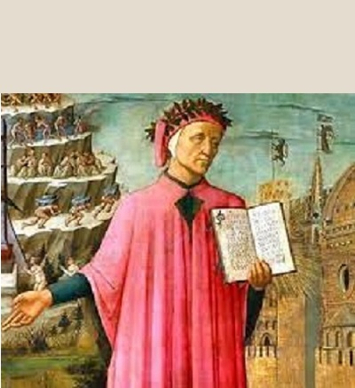
4-Principales Características del Humanismo Renacentista
Las principales características del humanismo renacentista incluyen:
1. Enfoque en el Ser Humano: Se centró en el estudio de la naturaleza y las capacidades humanas, valorando la dignidad y el potencial del individuo.
2. Redescubrimiento de Textos Clásicos: Se promovió el estudio de las obras de la Grecia y Roma antiguas, tanto en filosofía como en literatura, buscando inspiración en sus ideas y valores.
3. Énfasis en la Educación: Se desarrollaron nuevas metodologías educativas que incluían el estudio de las humanidades (gramática, retórica, historia, poesía y filosofía), fomentando un aprendizaje más integral.
4. Interés por las Ciencias: Se dio un impulso a la investigación científica y la observación empírica, destacando la importancia de la razón y el método científico.
5. Secularización del Pensamiento: Aunque muchos humanistas eran religiosos, se comenzó a cuestionar la autoridad de la Iglesia y a explorar temas seculares en la literatura y el arte.
6. Estilo Literario: Se popularizaron géneros como el ensayo y el soneto, con un uso más personal y subjetivo del lenguaje, reflejando pensamientos y emociones individuales.
7. Ideal de la Virtud Cívica: Se promovió la idea de que los ciudadanos debían participar activamente en la vida pública y asumir responsabilidades sociales y políticas.
8. Diversidad Cultural: Se valoró la diversidad de las culturas y se comenzó aexplorar y apreciar el arte y la literatura de distintas tradiciones, no solo las clásicas.
5-Influencia de humanismo en el pensamiento y la cultura de la época renacentista
La influencia del humanismo en el pensamiento y la cultura de la época renacentista fue profunda y multifacética. Aquí daremos algunos puntos clave:
1. Redefinición de la Filosofía: El humanismo promovió un enfoque más racional y crítico, desafiando las ideas medievales centradas en la teología. Filósofos como Erasmo y Pico de la Mirandola exploraron temas relacionados con la ética y la moral desde una perspectiva humanista.
2. Desarrollo de las Artes: Los artistas renacentistas, como Leonardo da Vinci y Miguel Ángel, se inspiraron en la anatomía humana y la naturaleza, aplicando principios de proporción y perspectiva. Sus obras reflejan una preocupación por la belleza y la experiencia humana.
3. Literatura y Poesía: Autores como Petrarca y Boccaccio revitalizaron la poesía y la narrativa, incorporando temas humanos y emocionales. Se experimentó con nuevas formas literarias, como el ensayo y el soneto, que reflejaban la subjetividad y la experiencia individual.
4. Educación y Académicos: El humanismo llevó a la creación de universidades y a la inclusión de las humanidades en los planes de estudio. Se promovió un tipo de educación que valoraba el pensamiento crítico y el debate.
5. Ciencia y Observación: El humanismo fomentó un interés renovado en la ciencia y la observación empírica. Pensadores como Copérnico y Galileo comenzaron a desafiar las visiones geocéntricas del universo, sentando las bases para la revolución científica.
6. Reforma Religiosa: Las ideas humanistas contribuyeron a la crítica de la corrupción en la Iglesia y al surgimiento de movimientos reformistas. Figures como Lutero se vieron influenciados por el pensamiento humanista en subúsqueda de una fe más personal y directa.
7. Promoción de la Individualidad: Se valoró la individualidad y la expresión personal, lo que llevó a un mayor reconocimiento del potencial humano y a la idea de que cada persona podía influir en su destino.
8. Intercambio Cultural: El humanismo facilitó el intercambio de ideas entre distintas culturas, gracias a la traducción de textos y al contacto con otras civilizaciones, enriqueciendo así el panorama cultural europeo.

6-Los principales pensadores humanistas y sus contribuciones
Aquí nombraremos algunos de los principales pensadores humanistas y sus contribuciones:
1. Francesco Petrarca (Petrarch) (1304-1374): Contribuciones: Es considerado el “padre del humanismo”. Petrarca rescató y estudió textos clásicos, especialmente los de Cicerón, y promovió la idea de que el estudio de las obras clásicas ayudaría a cultivar las virtudes humanas. Su enfoque en la poesía, como sus “Sonetos a Laura”, destacó la importancia de la subjetividad y las emociones humanas.
2. Giovanni Boccaccio (1313-1375): Contribuciones: Fue un escritor y humanista italiano, autor de “El Decamerón”, una colección de cuentos que refleja la vida, las emociones y la experiencia humana. Su obra resalta el ingenio y la naturaleza diversa del ser humano, siendo una de las primeras en tratar temas de la vida cotidiana con profundidad y humor.
3. Erasmo de Róterdam (1466-1536):Contribuciones: Considerado uno de los humanistas más influyentes de Europa, Erasmo promovió el pensamiento crítico y la reforma educativa. Su obra más famosa, “Elogio de la locura”, es una sátira sobre las instituciones sociales y eclesiásticas. También abogó por la edición crítica del Nuevo Testamento en griego, buscando regresar a las fuentes originales del cristianismo.
4. Tomás Moro (1478-1535): Contribuciones: Es conocido por su obra “Utopía”, donde describe una sociedad ideal basada en la igualdad, la racionalidad y el bien común. Moro criticaba las injusticias de su época, en especial las desigualdades sociales y la corrupción política, y proponía reformas humanistas que reflejaban la búsqueda de una sociedad más justa y humana.
5. Juan Luis Vives (1493-1540): Contribuciones: Filósofo y pedagogo español, Vives fue uno de los primeros en desarrollar ideas humanistas sobre la educación, defendiendo un sistema educativo universal basado en la experiencia y la observación. En su obra “Deanima et vita”, abordó temas de psicología, ética y filosofía moral También escribió sobre la importancia de la educación de las mujeres.
6. Leonardo Bruni (1370-1444): Contribuciones: Humanista y erudito italiano, Bruni es famoso por su trabajo en la traducción de obras clásicas, especialmente de Platón y Aristóteles, y por su obra “Historia del pueblo florentino”, una de las primeras historias escritas desde una perspectiva humanista. Defendió el estudio de las humanidades como un medio para mejorar el gobierno y la sociedad.
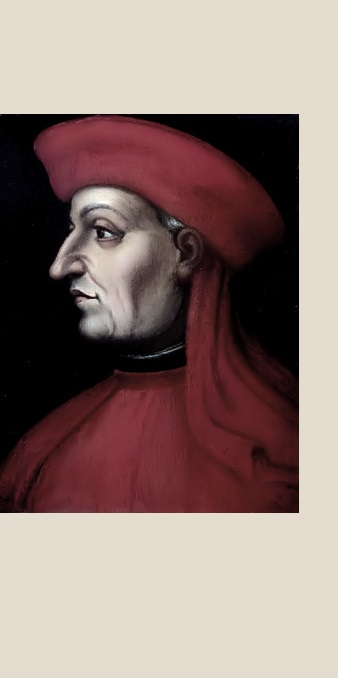
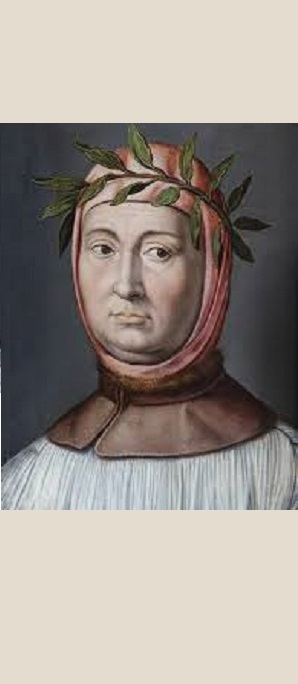
7-El papel que tuvo la literatura y las artes en la difusión de las ideas renacentistas
La literatura y las artes desempeñaron un papel fundamental en la difusión de las ideas renacentistas, ya que fueron medios clave para expresar y transmitir los valores del humanismo y el redescubrimiento de la cultura clásica. A continuación, se detalla cómo estos dos ámbitos fueron cruciales para expandir la visión renacentista por Europa:
1. La literatura: - Renovación del lenguaje y del estilo: Los escritores renacentistas comenzaron a escribir en lenguas vernáculas, como el italiano, el francés y el español, en lugar de usar exclusivamente el latín, lo que permitió que un público más amplio tuviera acceso a las ideas del Renacimiento. Este cambio democratizó el conocimiento y la cultura.
- Humanismo y el individuo: La literatura se centró en el ser humano como el protagonista de su propia vida, mostrando sus emociones, ambiciones, problemas y logros. Obras como "El Decamerón" de Boccaccio o las “Novelas ejemplares” de Cervantes exploran la naturaleza humana, sus defectos y virtudes, promoviendo el individualismo y el libre albedrío.
- Difusión de las ideas humanistas: A través de obras filosóficas, como “El príncipe” de Maquiavelo o “Elogio de la locura” de Erasmo de Róterdam, las ideas renacentistas sobre política, ética y crítica social se difundieron. Estas obras exploraron temas como la virtud, el poder, la moral y las fallas de las instituciones sociales y religiosas, impulsando el cambio y la reforma.
- La imprenta: La invención de la imprenta de Gutenberg (1450) fue un factor crucial en la rápida difusión de las ideas renacentistas. Permitió la reproducción masiva de libros, haciendo que los textos literarios, científicos y filosóficos del Renacimiento llegarán a más personas. Obras como las traducciones de textos clásicos y las de los autores contemporáneos alcanzaron una audiencia mucho mayor.
2. Las artes plásticas (pintura, escultura y arquitectura):
- Antropocentrismo y realismo: Los artistas del Renacimiento, como Leonardo da Vinci, Miguel Ángel y Rafael, se inspiraron en el redescubrimiento del ser 11 humano como un ser racional y bello. En sus pinturas y esculturas, representaron el cuerpo humano con un realismo sin precedentes, reflejando la importancia del hombre en el centro del universo.
- En obras como el “David” de Miguel Ángel o el fresco de “La creación de Adán” en la Capilla Sixtina, se exalta la figura humana como un símbolo de poder, belleza y racionalidad.
- Perspectiva y técnica: El desarrollo de la perspectiva en la pintura, liderado por artistas como Brunelleschi y Masaccio, permitió representar la tridimensionalidad de manera precisa, lo que dotó de mayor realismo a las obras y reflejaba el deseo de comprender y dominar las leyes del espacio y la naturaleza. Esta técnica fue clave para transmitir las ideas de orden y racionalidad propias del Renacimiento.
- Mecenas y arte como herramienta de poder: El arte también se utilizó como un medio para transmitir poder y prestigio. Las familias poderosas, como los Medici en Florencia o los papas en Roma, financiaron a artistas y arquitectos para construir grandes obras públicas y privadas que no solo reflejaban su riqueza, sino también las ideas del Renacimiento. Catedrales, palacios y esculturas públicas se convirtieron en símbolos visibles de los valores renacentistas.
- Mitología y temas clásicos: Se produjo un resurgimiento del uso de temas mitológicos y de la antigüedad clásica, lo que demostró la profunda admiración que los artistas sentían por el legado grecorromano. Obras como "El nacimiento de Venus" de Botticelli o los frescos de Rafael en el Vaticano, reflejan cómo las historias de la mitología clásica fueron reinterpretadas a través de una lente humanista.
- Arquitectura renacentista: Inspirada en los principios de simetría, proporción y armonía de la antigüedad clásica, arquitectos como Filippo Brunelleschi (diseñador de la Cúpula de la Catedral de Florencia) y Andrea Palladio renovaron las ciudades europeas, construyendo edificios que reflejaban el orden y la racionalidad del Renacimiento.
3. Teatro:- El teatro renacentista, especialmente en Inglaterra con William Shakespeare, representaba la complejidad de la naturaleza humana. Obras como “Hamlet” y “Macbeth” exploraron temas como la ambición, la venganza, el poder y las emociones humanas, elementos centrales del pensamiento humanista. El teatro se convirtió en un espacio donde las ideas sobre la moralidad, el destino y la libertad humana se debatían y escenificaban.
4. Música - La música renacentista también jugó un papel en la difusión de ideas humanistas, con compositores como Josquin des Prez y Palestrina desarrollando formas musicales que se basaban en la claridad y la belleza, muchas veces vinculadas a temas religiosos, pero desde una perspectiva más armoniosa y humana. La polifonía, por ejemplo, refleja un equilibrio entre las voces, un paralelismo con los ideales renacentistas de orden y equilibrio.
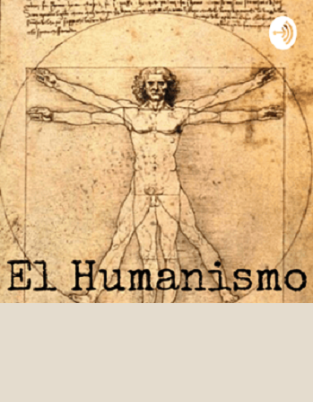
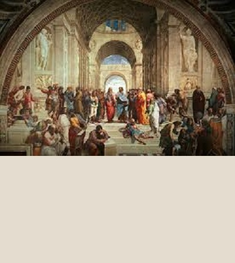
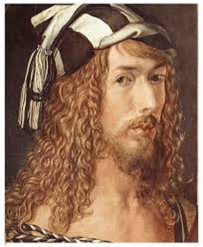
8-¿Cómo se refleja el redescubrimiento de la antigüedad clásica en las obras de arte del Renacimiento?
El redescubrimiento de la antigüedad clásica (la cultura grecorromana) se refleja de manera profunda en las obras de arte del Renacimiento. Este retorno a los ideales de Grecia y Roma influyó en las técnicas, temas y valores estéticos de los artistas de esta época, quienes se inspiraron en los principios de equilibrio, simetría, armonía y belleza natural de las antiguas civilizaciones. Aquí te explico cómo se manifiesta ese redescubrimiento en las obras renacentistas:
1. El culto a la figura humana:
Idealización del cuerpo humano: Siguiendo la tradición clásica, los artistas renacentistas representaron el cuerpo humano como un ideal de belleza y proporción. Esculturas como el “David” de Miguel Ángel y pinturas como “El nacimiento de Venus” de Sandro Botticelli se inspiran en las proporciones matemáticas y la perfección física que se observaba en las estatuas griegas y romanas.
- Anatomía detallada: Inspirados por el estudio de la anatomía de los griegos y romanos, los artistas del Renacimiento, como Leonardo da Vinci, realizaron estudios minuciosos del cuerpo humano. Obras como “El hombre de Vitruvio” de Leonardo son ejemplos de cómo los artistas aplicaron los principios de simetría y proporción descritos por Vitruvio, un arquitecto romano, para lograr la perfección en la representación humana.
2. Temática mitológica y clásica:
- Reaparición de los temas mitológicos: Durante el Renacimiento, hubo una gran cantidad de obras basadas en los mitos de la antigüedad clásica. Escenas de la mitología griega y romana, como las diosas Venus y Minerva, y figuras heroicas como Hércules, fueron ampliamente representadas. Por ejemplo, en “El Olimpo en la Tierra” de Bayeu.
- Heroísmo y virtud: La idea del héroe clásico, que encarna la virtud, el valor y el honor, también resurge en el arte del Renacimiento. Las figuras de la mitología grecorromana, como los dioses y héroes, simbolizan las aspiraciones humanas y el ideal moral, una temática que ya era central en la cultura clásica.
3. Arquitectura clásica:
- Uso de la simetría y la proporción: Inspirados por los tratados de arquitectura romana, como los escritos de Vitruvio, los arquitectos del Renacimiento, como Filippo Brunelleschi y Andrea Palladio, utilizaron principios de proporción y simetría en sus diseños. Un ejemplo claro es la Cúpula de la Catedral de Florencia, diseñada por Brunelleschi, que sigue los principios clásicos de equilibrio geométrico
Elementos arquitectónicos clásicos: Columnas, arcos y frontones, característicos de la arquitectura griega y romana, fueron readaptados en los edificios renacentistas. Palladio, en particular, fue un gran defensor de la arquitectura clásica, y sus villas en Italia, como la Villa Rotonda, están claramente inspiradas en el templo romano del Panteón.
4. Perspectiva y espacio tridimensional:
- Desarrollo de la perspectiva lineal: Los artistas del Renacimiento estudiaron los escritos matemáticos y filosóficos de los griegos y romanos, lo que los llevó a desarrollar técnicas avanzadas de perspectiva para crear la ilusión de profundidad y tridimensionalidad en sus pinturas. Filippo Brunelleschi fue uno de los pioneros en aplicar la perspectiva lineal, lo cual permitió a artistas como Masaccio, en su pintura "La Trinidad", crear una representación espacial más precisa y realista.
- Imitación de la naturaleza: En línea con los valores clásicos, el Renacimiento fomentó la observación y representación precisa de la naturaleza. Este enfoque se basaba en la creencia griega de que la belleza residía en la armonía natural. Obras como “La última cena” de Leonardo da Vinci emplean una composición equilibrada y un tratamiento de la luz que refleja este ideal clásico de imitación de la naturaleza.
5. Énfasis en el equilibrio y la armonía:
- Composiciones equilibradas: La idea clásica del equilibrio y la armonía se refleja en las composiciones artísticas del Renacimiento. En obras como "La escuela de Atenas" de Rafael, los personajes están distribuidos en una composición simétrica, con una clara perspectiva y armonía visual que recuerda las obras del arte clásico.
- Geometría en el arte: Los artistas del Renacimiento aplicaron principios geométricos, como los círculos y triángulos, para estructurar sus composiciones, al igual que los griegos y romanos. Estas formas geométricas no solo aportaban equilibrio y armonía a las obras, sino que también simbolizaban el orden y la perfección.
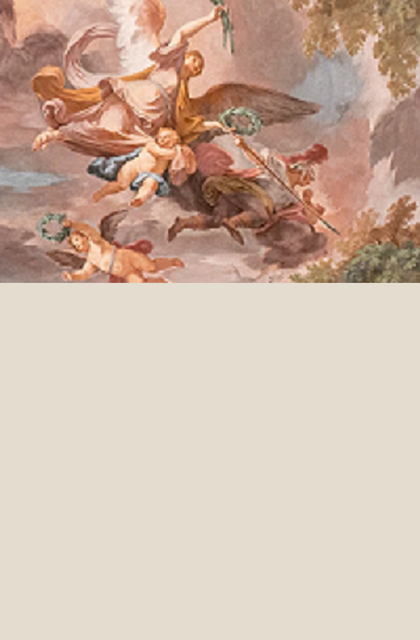
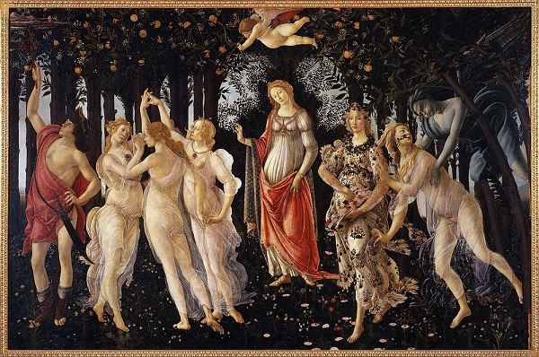
9-La relación entre el Renacimiento y el desarrollo de la ciencia
9-La relación entre el Renacimiento y el desarrollo de la ciencia: El Renacimiento tuvo una relación directa y profunda con el desarrollo de la ciencia*, marcando una de las etapas más transformadoras en la historia del pensamiento científico. Durante este período, surgió un cambio de mentalidad que dejó atrás muchos de los dogmas medievales, favoreciendo la **observación directa de la naturaleza, el **método experimental* y el *redescubrimiento del conocimiento clásico* de autores como Aristóteles, Ptolomeo y Galeno, pero ahora revisado y cuestionado bajo una nueva luz.
1. Humanismo y ciencia - El humanismo fue el núcleo filosófico del Renacimiento, y su énfasis en la dignidad y el potencial del ser humano influyó directamente en la ciencia. El estudio del ser humano y del mundo natural se volvió una búsqueda central. Los humanistas valoraban el conocimiento empírico, y la observación directa y el pensamiento crítico comenzaron a reemplazar la dependencia exclusiva en la autoridad de la Iglesia o de los textos antiguos. - Este enfoque humanista llevó a científicos como Leonardo da Vinci a realizar estudios de anatomía humana, ingeniería y mecánica, fundamentados en la observación rigurosa de la realidad. Da Vinci representa el ideal renacentista del "hombre universal" que combina arte y ciencia.
2. Redescubrimiento de textos antiguos - Durante el Renacimiento, se produjo una recuperación de textos científicos y filosóficos de la antigüedad clásica, en particular los trabajos de Aristóteles, Ptolomeo, Euclides, Hipócrates y Galeno. Sin embargo, los científicos renacentistas no se limitaron a reverenciar estos textos, sino que comenzaron a cuestionar y corregir muchas de las ideas clásicas. - Esto fue crucial para el avance de la ciencia, ya que se promovió un enfoque crítico. Por ejemplo, el redescubrimiento de la obra de Ptolomeo en astronomía planteó un desafío que posteriormente Nicolás Copérnico refutó al desarrollar la teoría heliocéntrica, donde sostenía que el Sol y no la Tierra era el centro del universo, en su obra "De revolutionibus orbium coelestium" (1543).
3. Método experimental - Durante el Renacimiento se asentaron las bases del método científico moderno. El enfoque empírico y experimental, que contrastaba con la dependencia de la escolástica medieval, permitió que la ciencia evolucionara rápidamente. Galileo Galilei, por ejemplo, perfeccionó el método experimental observando fenómenos naturales y formulando leyes matemáticas para describirlos. A través de sus experimentos sobre el movimiento y sus observaciones astronómicas con el telescopio, Galileo refutó muchos de los conceptos tradicionales defendidos por la Iglesia y los filósofos aristotélicos. - Francis Bacon, otro gran pensador renacentista, también abogó por el desarrollo de un nuevo método científico basado en la observación y la experimentación en su obra "Novum Organum", que criticaba el uso exclusivo de la lógica deductiva y abogaba por un enfoque inductivo.
4. Desarrollo de la astronomía - La astronomía fue una de las ciencias que más se transformó durante el Renacimiento. Además de Copérnico, Tycho Brahe realizó observaciones astronómicas muy precisas que ayudaron a refinar las teorías sobre el movimiento de los cuerpos celestes. Basado en las observaciones de Brahe, Johannes Kepler formuló las Leyes del movimiento planetario, que mostraban que los planetas se movían en órbitas elípticas alrededor del Sol, lo cual fue un paso más allá de Copérnico y una ruptura definitiva con la cosmología ptolemaica. - Estos avances en astronomía no solo cambiaron la comprensión del universo, sino que también desafiaron las ideas establecidas por la Iglesia, que en ese momento defendía una visión geocéntrica del cosmos.
5. Progresos en anatomía y medicina - La ciencia médica también experimentó una revolución durante el Renacimiento, particularmente en el estudio de la anatomía humana. Andreas Vesalio fue uno de los primeros en realizar estudios anatómicos detallados basados en la disección de cuerpos humanos, lo que le permitió refutar muchos errores de los antiguos textos de Galeno, que habían sido aceptados durante siglos. Su obra "De humani corporis fabrica" (1543) sentó las bases para la anatomía moderna. - Vesalio, al igual que otros anatomistas renacentistas, enfatizó la necesidad de basar el conocimiento médico en la observación directa del cuerpo humano, en lugar de confiar ciegamente en la autoridad de textos antiguos.
6. Matemáticas y física - Las matemáticas adquirieron una importancia central como lenguaje de la naturaleza. Durante el Renacimiento, se hicieron importantes avances en geometría y álgebra, impulsados por científicos como Gerolamo Cardano y Niccolò Tartaglia, que introdujeron nuevos métodos para resolver ecuaciones. La combinación de matemáticas con la ciencia física permitió a los científicos hacer predicciones más precisas y desarrollar modelos más exactos del mundo físico. - Galileo Galilei aplicó principios matemáticos al estudio del movimiento, lo que le permitió descubrir la ley de la caída de los cuerpos y formular la idea de que todos los objetos caen al mismo ritmo en ausencia de resistencia.
7. Química y alquimia - Aunque la alquimia fue una disciplina popular en el Renacimiento, algunos de sus principios comenzaron a transformarse en lo que luego se convertiría en la química moderna. Paracelso, un médico y alquimista, propuso que las enfermedades eran el resultado de desequilibrios químicos en el cuerpo, lo que representó un cambio radical respecto a las teorías médicas tradicionales basadas en los humores. Sus ideas abrieron el camino hacia una visión más científica de la medicina y la farmacología.
8. Interacción entre arte y ciencia - El Renacimiento también fue testigo de una estrecha relación entre el arte y la ciencia. Artistas como Leonardo da Vinci y Alberto Durero no solo fueron grandes creadores artísticos, sino también científicos e ingenieros que aplicaron los principios científicos en sus obras. Da Vinci realizó estudios detallados sobre anatomía, física y mecánica, muchos de los cuales influyeron en su trabajo artístico, como se ve en el *“Hombre de Vitruvio”*, que es un estudio de las proporciones humanas basado en textos de Vitruvio. - Esta interacción entre arte y ciencia reflejaba el ideal renacentista del "hombre universal", capaz de dominar diferentes campos del conocimiento y de buscar el entendimiento del mundo desde una perspectiva tanto estética como racional.
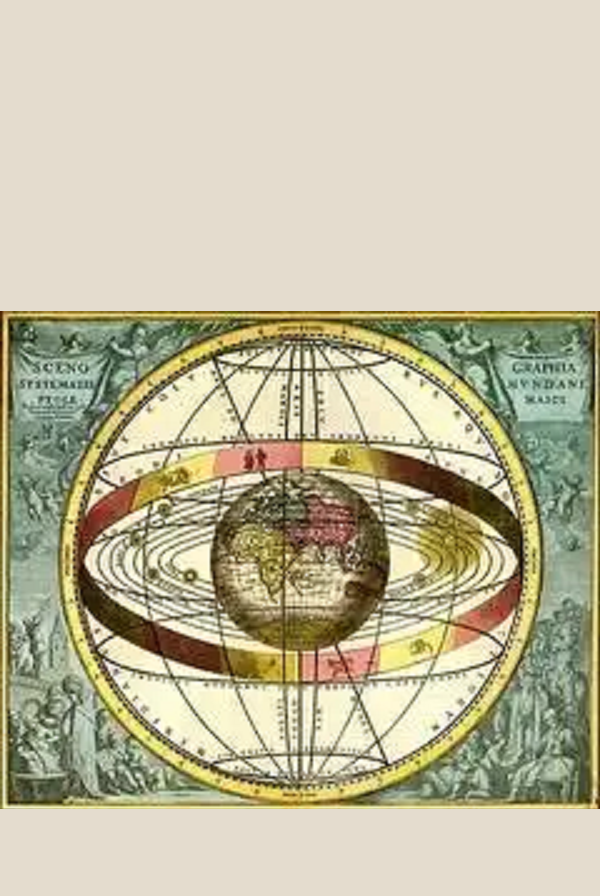
10-¿De qué manera la invención de la imprenta impactó el Renacimiento y el humanismo?
La invención de la imprenta por Johannes Gutenberg en 1440 fue uno de los desarrollos más significativos del Renacimiento, impactando profundamente el humanismo y transformando la sociedad europea. La imprenta permitió la rápida difusión de ideas, textos y conocimientos, facilitando el acceso al saber y promoviendo el pensamiento crítico y la reforma en múltiples campos, desde la ciencia hasta la religión.
1. Difusión masiva de las ideas humanistas - La imprenta permitió la producción masiva de libros y otros textos, lo que facilitó la difusión de las ideas humanistas que estaban en el centro del Renacimiento. Los humanistas, que valoraban el estudio de los clásicos y la mejora del ser humano a través del conocimiento, se beneficiaron enormemente de la posibilidad de reproducir obras en grandes cantidades. - Antes de la imprenta, los libros eran copiados a mano, lo que los hacía extremadamente costosos y raros, accesibles solo para las élites eclesiásticas y algunas familias adineradas. Con la imprenta, las ideas humanistas, plasmadas en textos filosóficos, literarios y científicos, pudieron llegar a una audiencia mucho más amplia, rompiendo las barreras geográficas y sociales. - Erasmo de Róterdam, uno de los principales pensadores humanistas, fue un beneficiario clave de la imprenta. Sus obras, como “Elogio de la locura” y ediciones críticas de los textos clásicos, fueron impresas y difundidas por toda Europa, influyendo en el pensamiento de la época.
2. Acceso a textos clásicos - Los textos clásicos griegos y latinos, que habían sido preservados y reintroducidos en Europa gracias al Renacimiento, fueron más accesibles gracias a la imprenta. Esto permitió a los humanistas tener acceso a las obras de autores como Platón, Aristóteles, Cicerón, Virgilio, entre otros. Antes de la imprenta, solo unos pocos eruditos podían acceder a estos textos, que muchas veces solo existían en bibliotecas monásticas. - Los eruditos y humanistas podían compartir rápidamente sus comentarios y traducciones de los clásicos con otros intelectuales, facilitando el debate, la crítica textual y el refinamiento del conocimiento.
3. Revolución del conocimiento y la educación - La imprenta facilitó una democratización del conocimiento al hacer que los libros fueran más accesibles a diferentes sectores de la sociedad. Esto no solo ayudó a los eruditos y las élites, sino también a la creciente clase media, que ahora podía acceder a libros y educarse. - Esto provocó un auge en la alfabetización y permitió la creación de escuelas y universidades que ya no dependían exclusivamente de la enseñanza oral o de los pocos manuscritos disponibles. La multiplicación de libros sobre temas como filosofía, ciencia, gramática, religión y política enriqueció el currículo educativo del período renacentista.
4. Impacto en la religión y la Reforma Protestante - La imprenta también fue clave para la Reforma Protestante. Los escritos de Martín Lutero, como sus 95 tesis, se imprimieron y distribuyeron rápidamente, lo que aceleró el movimiento de reforma y cuestionó la autoridad de la Iglesia Católica. - Esta capacidad de difundir masivamente ideas religiosas llevó a una pluralidad de interpretaciones bíblicas y a la traducción de la Biblia a lenguas vernáculas. La traducción de Lutero de la Biblia al alemán fue crucial para el acceso directo de la gente común a los textos sagrados, algo que la Iglesia había controlado fuertemente hasta entonces.
5. Avances científicos - La imprenta también fue fundamental para el avance de la ciencia durante el Renacimiento. Las nuevas ideas y descubrimientos de científicos como Nicolás Copérnico, Andreas Vesalio, Johannes Kepler y Galileo Galilei fueron diseminados más fácilmente gracias a la capacidad de imprimir y distribuir sus obras. - Por ejemplo, la obra “De revolutionibus orbium coelestium” de Copérnico, que propuso el modelo heliocéntrico del sistema solar, pudo circular rápidamente entre los eruditos de toda Europa. Esto fue clave para el debate científico y la eventual aceptación de nuevas teorías astronómicas.
6. Unificación de la lengua y desarrollo de las lenguas vernáculas - Antes de la imprenta, el latín era la lengua predominante en el ámbito intelectual y religioso. Sin embargo, la imprenta permitió la publicación de obras en lenguas vernáculas (italiano, español, alemán, inglés), lo que contribuyó a la unificación y estandarización de estas lenguas. - Dante Alighieri, Petrarca, Boccaccio y, más tarde, Miguel de Cervantes y William Shakespeare, pudieron difundir sus obras en lenguas vernáculas, lo que ayudó a crear una identidad cultural más fuerte y a promover la alfabetización en las lenguas nativas.
7. Creación de una comunidad intelectual - La imprenta permitió la creación de una red de eruditos e intelectuales a lo largo de Europa, que podían compartir ideas más rápidamente. Esto dio lugar a un debate académico mucho más dinámico y plural, ya que los académicos de distintos países podían acceder fácilmente a las obras de otros y responder a sus ideas. - Este intercambio de ideas entre los eruditos fomentó el desarrollo de nuevas teorías y conocimientos en todas las áreas del saber, desde la filosofía hasta la física. Además, los humanistas pudieron colaborar más estrechamente, dando lugar a una verdadera república de las letras.
8. Crecimiento del comercio de libros y expansión del conocimiento - La imprenta no solo transformó la forma en que se difundían las ideas, sino que también creó una industria del libro. Las ciudades con imprentas se convirtieron en centros de difusión del conocimiento. Lugares como Venecia, París, y más tarde Ámsterdam, se convirtieron en centros editoriales donde los intelectuales podían acceder fácilmente a una amplia gama de obras. - Este comercio de libros permitió que las ideas renacentistas y humanistas se expandieran rápidamente por toda Europa, llegando incluso a lugares más alejados del centro cultural europeo.
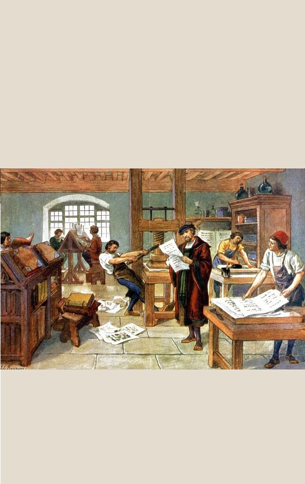
11-¿Cómo se manifestaron las ideas humanistas en la educación durante el Renacimiento?
Las ideas humanistas tuvieron un impacto profundo en la educación durante el Renacimiento, transformando el enfoque pedagógico que había predominado en la Edad Media y contribuyendo al desarrollo de una nueva visión del ser humano, el conocimiento y la enseñanza. Los humanistas abogaban por un retorno a los ideales de la antigüedad clásica, centrando la educación en el individuo, en la formación integral de sus capacidades intelectuales y morales, y en la promoción del conocimiento de las humanidades, es decir, disciplinas como la literatura, la filosofía, la historia y las lenguas clásicas.
1. Cambio en el enfoque educativo - Durante la Edad Media, la educación estaba fuertemente vinculada a la Iglesia y se enfocaba principalmente en la teología y el escolasticismo, que se centraban en la lógica y en la repetición de textos religiosos bajo la autoridad de las Escrituras y los Padres de la Iglesia. En contraste, los humanistas del Renacimiento impulsaron una educación laica que promovía una formación más amplia y crítica basada en el estudio de los autores clásicos griegos y romanos, como Cicerón, Platón, Aristóteles y Séneca. - El objetivo de la educación humanista no era solo el aprendizaje de un oficio o la obediencia a la doctrina religiosa, sino la formación de individuos completos que pudieran razonar por sí mismos, participar activamente en la vida pública y contribuir a la mejora de la sociedad.
2. Educación basada en las humanidades - Las disciplinas conocidas como "humanidades"(artes liberales) se convirtieron en el núcleo del currículo renacentista. Estas incluían gramática, retórica, poesía, historia, filosofía moral, y lenguas clásicas (latín y griego). Los humanistas creían que el estudio de estas materias proporcionaba los conocimientos y habilidades necesarios para el desarrollo de un pensamiento crítico, una elocuencia persuasiva y una vida ética. - Este enfoque se centraba en la formación del carácter y en el cultivo de las virtudes cívicas y morales, en lugar de la memorización mecánica de textos religiosos. La obra de Quintiliano, un orador romano cuya obra fue redescubierta durante el Renacimiento, fue influyente en este sentido, ya que defendía la formación moral y la enseñanza adaptada al desarrollo del alumno.
3. Énfasis en la formación individual y el potencial humano - Los humanistas promovieron la idea de que el ser humano es un ser dotado de razón y libre albedrío, con un potencial ilimitado para el desarrollo intelectual y moral. La educación, según los humanistas, debía sacar a relucir este potencial, formando a los estudiantes no solo en conocimientos, sino también en el arte del razonamiento, la ética y el juicio crítico. - Pico della Mirandola, en su famosa obra “Discurso sobre la dignidad del hombre” (1486), expresaba esta idea al afirmar que los seres humanos tienen la capacidad de elevarse a un nivel casi divino mediante el conocimiento y la virtud, destacando el poder transformador de la educación en la formación del individuo.
4. Escuelas y academias humanistas - Se fundaron numerosas escuelas y academias bajo los ideales del humanismo renacentista. Estas instituciones enfatizaban el estudio de los clásicos y ofrecían una educación más laica y secular que las escuelas eclesiásticas tradicionales. Entre las más destacadas se encuentra la Escuela de Mantua, promovida por Vittorino da Feltre, que fue pionera en integrar los ideales humanistas en el sistema educativo. - En estas escuelas, los estudiantes aprendían no solo las habilidades prácticas, sino también las artes liberales, con la intención de formar ciudadanos activos que pudieran participar en el servicio público y ejercer un liderazgo responsable. Además, se destacaba la importancia del ejercicio físico y el equilibrio entre el bienestar físico y mental.
5. Educación de príncipes y nobles - Los humanistas jugaron un papel crucial en la educación de la nobleza y los príncipes. Humanistas como Erasmo de Róterdam escribieron tratados sobre la educación de los gobernantes, subrayando la necesidad de que los líderes fueran cultivados, sabios y éticos. Erasmo, en su obra “De la educación del príncipe cristiano” (1516), aconsejó al futuro emperador Carlos V que fuera un gobernante justo y prudente, formado en las virtudes clásicas. - En estas cortes renacentistas, los humanistas también se encargaban de educar a los hijos de los nobles en las artes, las letras y la historia, con el fin de preparar a una élite gobernante capaz de liderar con sabiduría y justicia.
6. Renovación del latín y estudio del griego - Los humanistas valoraban profundamente el latín clásico y el griego como las lenguas clave para acceder al conocimiento de la antigüedad. A diferencia del latín eclesiástico y medieval, que consideraban corrupto y decadente, los humanistas promovieron el estudio del latín puro de autores como Cicerón y Virgilio. - Además, el redescubrimiento del griego antiguo permitió a los humanistas acceder a textos originales de autores griegos como Platón y Homero, que no habían estado disponibles en Europa occidental durante siglos. Este interés renovado por las lenguas clásicas fue fundamental para una nueva interpretación de los textos antiguos.
7. Humanismo cristiano y la formación moral - Aunque el humanismo renacentista tenía una fuerte dimensión secular, también existía una corriente de humanismo cristiano que promovía la integración de los valores cristianos con los ideales clásicos. Humanistas como Erasmo de Róterdam abogaron por una educación que promoviera tanto la virtud clásica como la espiritualidad cristiana. - Erasmo, en particular, defendió una educación que enfatizara el cristianismo interior y la ética personal por encima de los rituales externos, promoviendo la lectura de las Escrituras y una formación moral basada en el ejemplo de Cristo.
8. Educación para mujeres - Aunque la educación de las mujeres seguía siendo limitada en comparación con la de los hombres, el Renacimiento vio un creciente interés por la formación intelectual de las mujeres, especialmente entre las clases altas. Humanistas como Leonardo Bruni y Cristina de Pizán argumentaron que las mujeres también podían beneficiarse de la educación y deberían tener acceso a los mismos textos clásicos que los hombres. - Cristina de Pizán, en su obra “La Ciudad de las Damas”, defendió la capacidad intelectual de las mujeres y el derecho de estas a recibir una educación, desafiando los prejuicios de la época. Aunque la mayoría de las mujeres no tuvieron acceso a la educación formal, algunas lograron destacarse como eruditas y escritoras, como es el caso de Isotta Nogarola y Laura Cereta.
9. El impacto de la imprenta en la educación - La invención de la imprenta en el siglo XV facilitó la difusión masiva de textos humanistas y la multiplicación de libros accesibles para los estudiantes. Esto permitió que los textos clásicos y las nuevas obras de autores humanistas llegaran a un público mucho más amplio, impulsando la educación y el desarrollo del conocimiento en Europa.
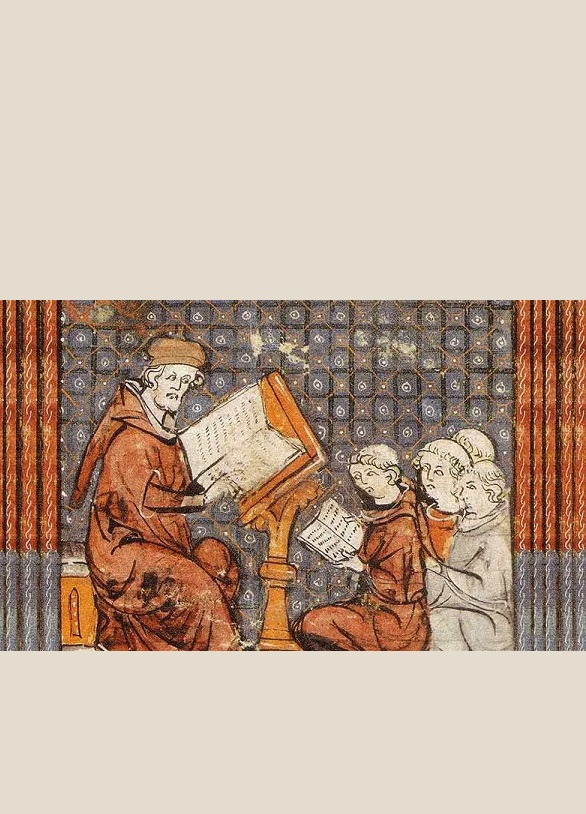
12-¿Cómo desafió el Renacimiento las ideas y la autoridad de la Iglesia católica?
El Renacimiento fue una época de profundas transformaciones intelectuales, culturales y sociales que cuestionaron muchas de las creencias y estructuras de poder tradicionales en Europa, incluida la autoridad de la Iglesia católica. Aunque no fue un movimiento completamente anticlerical, los valores humanistas y los avances del Renacimiento generaron un ambiente propicio para criticar y desafiar algunas de las prácticas y doctrinas de la Iglesia, preparando el terreno para la Reforma protestante y un cambio en la relación entre religión y sociedad.
1. Cuestionamiento del control eclesiástico sobre el conocimiento - Durante la Edad Media, la Iglesia católica tenía un control casi total sobre el acceso al conocimiento y la interpretación de las Escrituras. Sin embargo, los humanistas renacentistas promovieron una nueva forma de pensar basada en la razón, la observación empírica y el redescubrimiento de los textos clásicos griegos y romanos. Este enfoque fue en muchos aspectos contrario a la interpretación dogmática de la Iglesia, que sostenía la autoridad de los textos religiosos y la teología escolástica como las únicas fuentes de verdad. - Los humanistas abogaban por un retorno a los textos originales, tanto de los clásicos como de las Escrituras, lo que llevó a cuestionar las traducciones y comentarios oficiales de la Iglesia. Por ejemplo, la crítica de Erasmo de Róterdam a la Vulgata, la traducción latina oficial de la Biblia, y sus ediciones críticas del Nuevo Testamento fueron intentos por regresar a una interpretación más pura de los textos sagrados.
2. Humanismo cristiano y crítica de las prácticas eclesiásticas - Muchos humanistas cristianos, como Erasmo, no rechazaban la religión en sí, pero sí criticaban abiertamente las prácticas corruptas dentro de la Iglesia. Erasmo, en su obra "Elogio de la locura" (1511), se burlaba de la hipocresía de los clérigos y las supersticiones populares, al tiempo que defendía una religión más interior y auténtica, enfocada en la moral y la espiritualidad personal en lugar de los rituales externos y las indulgencias. - Estas críticas ayudaron a crear un clima de descontento con la autoridad de la Iglesia, especialmente en relación con prácticas como la venta de indulgencias, el nepotismo y la acumulación de riquezas por parte del clero.
3. La secularización del pensamiento y el arte - El Renacimiento fue testigo de un proceso de secularización en el arte, la ciencia y la cultura, que desafiaba la idea de que la vida humana debía estar completamente subordinada a la religión. Mientras que en la Edad Media el arte y el conocimiento estaban mayormente orientados a glorificar a Dios, el Renacimiento centró su atención en el ser humano y su potencial. - Los artistas del Renacimiento, como Leonardo da Vinci, Miguel Ángel y Rafael, retrataron al ser humano como un sujeto digno de estudio en sí mismo, promoviendo una visión antropocéntrica. Esto no implicaba un rechazo total de la religión, pero sí un alejamiento del control absoluto de la Iglesia sobre la creación artística e intelectual. - Los avances científicos también contribuyeron a este proceso. Por ejemplo, el trabajo de Nicolás Copérnico sobre el heliocentrismo (la teoría de que la Tierra gira alrededor del Sol) desafió directamente la cosmología geocéntrica de la Iglesia, que estaba basada en la interpretación literal de las Escrituras.
4. Avances científicos y tensiones con la Iglesia - El Renacimiento marcó el comienzo de una nueva era en el conocimiento científico que desafió las explicaciones teológicas del mundo. Pensadores como Galileo Galilei, Copérnico y Kepler propusieron ideas que se basaban en la observación empírica y los métodos científicos, lo que entraba en conflicto con la visión del universo de la Iglesia. - Galileo, en particular, tuvo conflictos con la Inquisición debido a su apoyo al modelo heliocéntrico de Copérnico, que contradecía las enseñanzas oficiales de la Iglesia. Fue obligado a retractarse en 1633, pero su caso simbolizó la creciente tensión entre la ciencia y la autoridad religiosa.
5. El impacto de la imprenta y la difusión del conocimiento - La invención de la imprenta por Johannes Gutenberg en el siglo XV fue fundamental para la difusión de las ideas renacentistas y humanistas que desafiaban a la Iglesia. Libros y panfletos se distribuyeron rápidamente por toda Europa, lo que permitió que los textos críticos hacia la Iglesia, las obras científicas y los tratados humanistas llegaran a un público mucho más amplio. - Este acceso al conocimiento debilitó el monopolio de la Iglesia sobre la educación y la información. En particular, permitió la difusión de las ideas reformistas de Martín Lutero y otros críticos religiosos, que impulsaron un movimiento de reforma dentro de la Iglesia que culminó en la Reforma protestante.
6. La Reforma protestante: culminación del desafío - El Renacimiento no fue la única causa de la Reforma protestante, pero preparó el terreno intelectual y cultural para que surgiera un movimiento de reforma religiosa. Las críticas humanistas a las prácticas corruptas de la Iglesia y el enfoque en la lectura directa de las Escrituras influyeron en figuras como Martín Lutero y Juan Calvino. - Lutero, en particular, utilizó los avances de la imprenta para difundir rápidamente sus ideas, incluyendo sus 95 tesis en 1517, que criticaban la venta de indulgencias y otras prácticas de la Iglesia. La Reforma protestante representó una ruptura directa con la autoridad del Papa y del clero católico, y planteó una serie de cuestionamientos sobre la interpretación de las Escrituras, la naturaleza de la salvación y la autoridad religiosa.
7. Individualismo y libre examen - El humanismo renacentista promovió la autonomía del individuo y la capacidad de cada persona para pensar por sí misma. Esta noción se oponía a la idea medieval de que el individuo debía depender de la Iglesia para interpretar las Escrituras y encontrar el camino hacia la salvación. - El concepto de libre examen defendido por Lutero y otros reformadores, que consistía en que los creyentes podían interpretar la Biblia sin la mediación de la Iglesia, fue influenciado por la tradición humanista de lectura crítica y autónoma de los textos.
8. Debates sobre el papel de la Iglesia en la política - Los humanistas también cuestionaron el papel dominante de la Iglesia en la vida política. Filósofos como Nicolás Maquiavelo en su obra El Príncipe separaron la política de la moralidad religiosa, argumentando que los gobernantes debían actuar según las exigencias prácticas del poder y no necesariamente según los preceptos cristianos. - Esta separación de la política y la religión marcó el inicio de un pensamiento secular en la teoría política que fue fundamental para el desarrollo de los estados modernos y para la posterior secularización de las instituciones europeas.
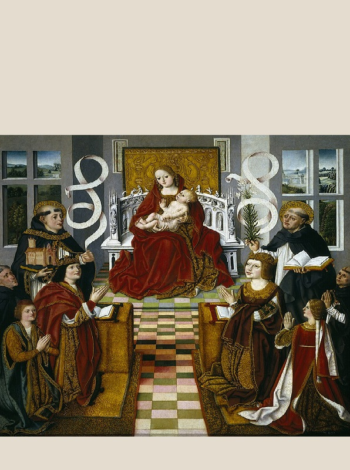